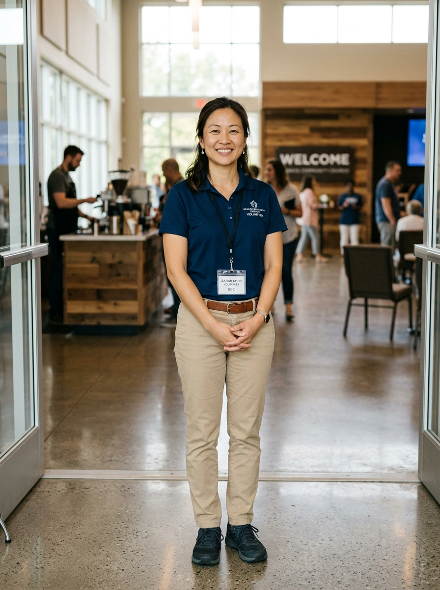

Serving Those Who Serve
Connecting our volunteers, day-of service leaders, and executive team into one unified ecosystem for volunteer care and operational excellence.
Volunteer Experience
Serving Church Members & Families
10-second registrations, clear Sunday commitments, personal profile schedules, and direct shift notifications.
Sunday Operations
Day-of Service Leaders (SLODs)
Live turn-up %, walk-in audits, and 3-day statistical turnup forecasts across 9AM, 12NN, and 3PM services.
Volunteer Care & Governance
VMT Administration & Pastoral Oversight
Grace-filled fidelity scoring formulas, staffing deficit forecasts, and targeted multi-channel broadcasting.
The Problem with Spreadsheets & Chat Groups
Administrative chaos steals our time from what actually matters: personal ministry and discipleship.
What's Hurting Our Teams Today
- Sunday Blindspots: SLODs arrive Sunday morning with zero confirmation of who will actually appear.
- Silent Volunteer Drift: Volunteers miss 3 Sundays in a row, and leadership only notices months later.
- Form Fatigue: Faithful volunteers type their name and phone number on every retreat or event form.
- Chat Noise: Urgent broadcast messages get buried under memes and chat banter.
The WelcomeHub Shift
- Predictive Visibility: Turn-up statistical forecasts give 3 days of early notice before Sunday.
- Pastoral Early Warning: Attendance scores highlight disengagement before drop-out occurs.
- Frictionless Serving: 1-click registration, instant RFID tap check-ins, and clear profile schedules.
- Precision Broadcasting: Direct push + email alerts targeted strictly by volunteer role.

PERSONA 01 · VOLUNTEER"Make Serving Frictionless, Valued, and Clear"
Aida's Past Frustrations
- Typing name, phone, and email repeatedly for church events.
- Forgetting which Sunday she's scheduled (1st vs. 3rd rotation).
- Missing ministry announcements inside crowded WhatsApp groups.
How WelcomeHub Serves Aida
- One-Tap Registration: Session auto-lookup confirms in 10s.
- Personal Profile: Clear Sunday rotation & attendance ledger.
- Direct Alerts: Push alerts and in-app bell drawer for her shifts.
"Sunday Morning: Confident, Prepared, and Agile"
Lorna's Past Frustrations
- Arriving Sunday blind to whether Ushers or IMT will actually show up.
- Scrambling 10 minutes before worship to fill missing posts.
- Zero visibility into attendance across 9AM, 12NN, and 3PM services.
How WelcomeHub Empowers Lorna
- Services Dashboard: Live turn-up % and walk-in counts per slot.
- Hub Calendar Forecast: Turnup tiers (Solid, Moderate, At Risk).
- Attendance Ledger: Granular RFID search & 1-click printable CSV.
"Strategic Care, Governance, and Proactive Shepherding"
Fe's Past Frustrations
- Volunteers silently disengaging without leadership knowing.
- No way to distinguish between excused absences and no-shows.
- Accidental message spamming across entire ministries.
How WelcomeHub Empowers Fe
- Commitment Dashboard: Grace-filled fidelity scoring formula.
- Attendance Forecast: Monthly trends & staffing deficit warnings.
- Precision Broadcasting: Multi-channel push + email with safety gate.
A Sunday in the Life: How All Three Connect
From Wednesday mid-week prep to Sunday altar ministry and Monday pastoral follow-ups.
Preparation (Wed–Thu)
- Fe: Broadcasts push reminders to scheduled Ushers.
- Aida: Checks her shift on profile; files advance excuse if sick.
- Lorna: Checks Hub Calendar for "At Risk" station gaps.
Execution (9AM · 12NN · 3PM)
- Aida: Taps her RFID tag at kiosk in 2 seconds.
- Lorna: Monitors Services Dashboard for real-time 9AM/12NN/3PM turnup.
- Aida: Steps in as walk-in for 3PM, earning bonus points.
Care & Review (Sun PM–Mon)
- Lorna: Audits check-ins on Attendance Data ledger.
- Fe: Reviews Commitment Dashboard to care for absent members.
- Aida: Sees positive attendance score on her profile.
Effortless Registration & Member Profile
Live System Flow
-
Navigate to Hub (
/). - Click Register on any event: show instant auto-lookup without re-typing.
-
Open Volunteer Profile (
/profile). - Show Sunday Commitment Rotation schedule (1st to 5th Sunday).
- Open the top-right Notification Drawer.
When Aida registers for a retreat or workshop, the system already knows who she is. No typing phone numbers or emails over and over. On her profile, she can always check which Sunday she committed to serve.
Hub Calendar & Avatar Health Rings
Live System Flow
-
Navigate to
/admin/hub-calendar. - Select this Sunday on the date picker.
- Click the At Risk filter tab to isolate potential volunteer shortages.
- Hover over color-coded avatar border rings (Green, Blue, Amber, Red).
- Click Export Sunday Schedule to download the printable CSV.
Ahead of Sunday service, Lorna opens the Hub Calendar. The statistical forecast categorizes expected turnup into Solid, Moderate, and At-Risk tiers—giving leadership days of advance visibility into potential station shortages.
Services Overview (9AM · 12NN · 3PM)
Live System Flow
-
Navigate to
/admin/services. - Toggle between Sunday, Month, and Annual views.
- Point to the 3 service slots: 9:00 AM, 12:00 NN, and 3:00 PM.
- Review turn-up percentage, committed targets, and actual attendees.
- Highlight Walk-In Volunteers and Late Arrival Overrides.
Overseeing all three Sunday services (9:00 AM, 12:00 NN, and 3:00 PM) is seamless. The Services Dashboard delivers real-time turnup rates per slot, tracks walk-in substitutes, and highlights staffing gaps as they arise.
Attendance Data Log & Check-In Ledger
Live System Flow
-
Navigate to
/admin/services/attendance/data. - Filter by Role (e.g., Usher or Backroom Support).
- Filter by Service Time Slot (9AM, 12NN, 3PM) or walk-in flag.
- Search a volunteer by name or RFID tag.
- Click Export CSV for official attendance records.
With an immutable attendance ledger, volunteer check-ins are verifiable and transparent. Leaders can filter by ministry role or service slot, audit walk-in substitutions, and export official reports with one click.
Commitment Dashboard & Attendance Scoring
Live System Flow
-
Navigate to
/admin/services/attendance/commitment. - Toggle between Q1, Q2, Q3, Q4, and YTD.
-
Explain the Attendance Score Formula:
- +1.0 pt: Honoring committed service slot.
- -1.0 pt: Unannounced / missed absence without excuse.
- -0.5 pt: Submitting an excuse request in advance.
- +0.5 pt: Stepping in as walk-in support (9AM / 3PM).
- Sort by lowest score or highest missed count to spot struggling volunteers.
The Commitment Dashboard evaluates volunteer schedule fidelity across the quarter with grace-filled accountability. Filing advance excuses halves penalties, walk-in coverage earns bonus points, and leaders can proactively identify and care for burnout.
Attendance Forecast & Staffing Targets
Live System Flow
-
Navigate to
/admin/services/attendance/forecast. - Use the Month Navigator to view projections for upcoming months.
- Inspect the Forecast Monthly Trend Chart across upcoming Sundays.
- Select specific Role Groups (Ushers, Prayer Coaches, IMT).
- Open Volunteer Staffing Targets modal to view minimum staffing thresholds.
Ministry planning extends months into the future. The Attendance Forecast projects volunteer turnup against minimum staffing thresholds across all roles, empowering ministry heads to recruit before shortages occur.
Precision Broadcasting & Confirmation Gate
Live System Flow
-
Navigate to
/admin/notifications. - Toggle both Push and Email channels.
- Set Target Audience to By Role (e.g., Prayer Coach & IMT).
- Highlight the live audience reach counter (recipients & device tokens).
- Click Preview & Dispatch to show the mandatory safety confirmation gate.
Precision broadcasting enables leaders to reach specific volunteer teams via Push and Email without spamming uninvolved members. A mandatory confirmation safety gate ensures critical communications are verified before dispatch.
Recommended 15-Minute Leader Pitch Agenda
| Time | Agenda Segment | Live Screens Covered | Outcome |
|---|---|---|---|
| 00–02 min | The Vision & Pain | Spreadsheet bottlenecks vs. Shepherding people | Alignment that current tools are failing volunteers |
| 02–05 min | Aida: Volunteer Flow |
/
&
/profile
|
Shows respect for volunteer time |
| 05–09 min | Lorna: Sunday Operations |
/hub-calendar
&
/services
|
Proves 9AM, 12NN, 3PM run with zero blindspots |
| 09–13 min | Fe: Volunteer Care |
/commitment
&
/notifications
|
Demonstrates data-driven pastoral care |
| 13–15 min | Next Steps & Q&A | Pilot date & ministry onboarding schedule | Secures leadership green light |
Leader Q&A: Ready-to-Use Answers
Q: What if an older volunteer isn't tech-savvy?
They don't have to be. On Sunday morning, they simply tap their physical RFID tag at the check-in desk, or the SLOD checks them in manually with one click.
Q: Does this replace personal pastoral care?
No—it unlocks it. Instead of spending 5 hours a week updating spreadsheets, leaders spend those 5 hours visiting or calling volunteers identified as 'At Risk'.
Q: How does the attendance score handle grace?
Submitting an excuse in advance halves the absence penalty (-0.5 instead of -1.0), and walk-in service earns positive bonus points. 5th Sundays are strictly optional with zero penalties.
Q: Can we import historical attendance data?
Yes. The Attendance Migration tool (/admin/services/attendance/migration)
imports past CSV rosters and seat records directly into the platform.
Implementation Roadmap & Onboarding
A structured 3-phase rollout to onboard volunteer teams with zero Sunday service disruption.
Roster & Schedule Setup
Import volunteer rosters, assign ministry roles, and verify 1st to 5th Sunday commitment schedules.
Pilot Sunday Service
Run SLOD dashboard and check-in kiosks across 9AM, 12NN, and 3PM services with on-ground support.
Full Ministry Adoption
Activate volunteer self-service profiles, targeted broadcast channels, and quarterly care forecasting.